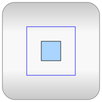
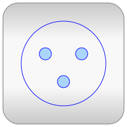

Anton Haumer
Technical Consulting &
Electrical Engineering
A-3423 St.Andrae-Woerdern, Austria
email: a.haumer@haumer.at
Dr. Christian Kral
Electric Machines, Drives and
Systems
A-1060 Vienna, Austria
email: dr.christian.kral@gmail.com
Copyright © 1998-2015, Modelica Association, Anton Haumer, Christian Kral and AIT.
This Modelica package is free software and the use is completely at your own risk; it can be redistributed and/or modified under the terms of the Modelica License 2. For license conditions (including the disclaimer of warranty) see Modelica.UsersGuide.ModelicaLicense2 or visit https://www.modelica.org/licenses/ModelicaLicense2.
| Name | Description |
|---|---|
| User's guide | |
|  SinglePhase | Single phase AC components |
| Quasistationary machine models | |
|  MultiPhase | Multiphase AC components |
| Definition of types for quasistationary AC models |
| Version | Revision | Date | Author | Comment |
|---|---|---|---|---|
| 1.0.0 | 2010-01-30 | A. Haumer C. Kral |